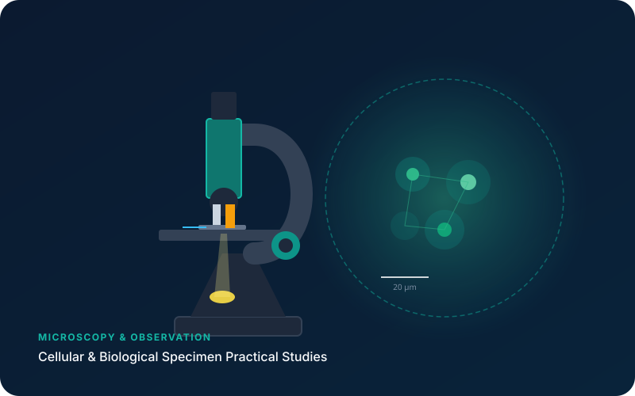
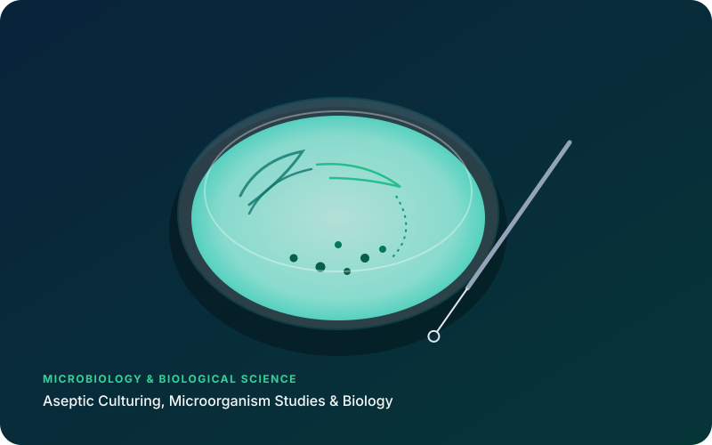
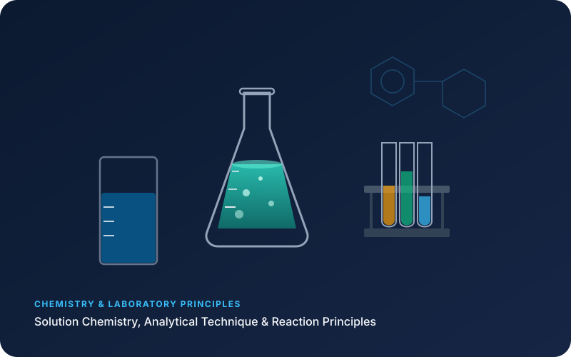

Exploring Science. Building a Future in Pharmacy.
I am a third-year undergraduate at the University of Sri Jayewardenepura, studying Zoology, Microbiology, and Chemistry. Through my academic studies and laboratory practicals, I am developing a strong scientific foundation while working towards my long-term goal of becoming a pharmacist.
Curious About Science. Committed to Growth.
I am a science undergraduate at the University of Sri Jayewardenepura with an academic background spanning Zoology, Microbiology, and Chemistry. My university studies have introduced me to scientific observation, laboratory practicals, and analytical thinking. I am particularly interested in the relationship between microbiology, chemistry, health, and pharmaceutical science.
I aim to continue developing my scientific knowledge and practical abilities through meaningful learning experiences and suitable internship opportunities. My long-term ambition is to become a pharmacist, and I am preparing towards my planned External Pharmacist Examination pathway for 2028.
Scientific Foundation
Zoology, Microbiology, and Chemistry.
Practical Learning
University laboratory practicals and academic projects.
Future Direction
Pharmaceutical science and a career in pharmacy.
My Academic Foundation
A structured progression of university studies and biological sciences foundation.
University of Sri Jayewardenepura, Sri Lanka
Engaging in comprehensive undergraduate coursework spanning biological and physical sciences. Curriculum emphasizes systematic scientific investigation, analytical reasoning, and extensive faculty laboratory practical sessions in microbiology, zoology, and chemistry.
- Subject Combination : Zoology, Microbiology, and Chemistry
- Active participation in university laboratory practical sessions and scientific documentation
Kegalu Balika Vidyalaya - Kegalle
Completed secondary education with competitive national examination results in the Biological Science stream, providing the foundational principles in biology and chemistry required for university scientific study.
- Built a strong foundational understanding in Biology, Chemistry, and Physics
- Admitted to the University of Sri Jayewardenepura
Sri Sanghabodhi Central College - Nittambuwa
- 7 'A' Grades: Science, Mathematics, Buddhism, Sinhala, History, Health & Physical Education, Business & Accounting Studies.
- 2 'B' Grade: English, Sinhala Literature.
- Demonstrated well-rounded academic excellence across sciences, mathematics, and humanities.
Skills Developed Through Learning
Authentic academic and laboratory abilities built through consistent practical participation.
Laboratory & Scientific
Practical benchwork competencies cultivated through university faculty sessions.
-
Microscope handling PracticalBrightfield optical microscope operation, slide alignment, and focus
-
University lab practicals PracticalMicrobiology, zoology, and chemistry faculty practical sessions
-
Scientific observation ObservationalAccurate specimen examination, morphological evaluation, and logging
-
Laboratory safety awareness SafetyGood laboratory practice (GLP), PPE adherence, and hazard awareness
-
Recording experimental observations DocumentationSystematic record-keeping and data integrity in laboratory logbooks
Digital Skills
Software and numerical tools applied to scientific data organization.
-
Microsoft Excel SoftwareFormulas, calculations, data tables, and tabular data entry
-
Basic data organization MethodsStructuring experimental findings and observation sets logically
-
Tables & spreadsheet formatting ReportingClean tabular formatting for academic reports and lab assignments
Academic Skills
Core cognitive and collaborative abilities developed through undergraduate life.
-
Scientific learning & research awareness AcademicEngaging with academic literature and understanding the scientific method
-
Analytical thinking CognitiveCorrelating observed experimental results with theoretical principles
-
Attention to detail CoreCareful specimen inspection and precise measurement recordings
-
Time management OrganizationalBalancing multi-discipline laboratory coursework and academic deadlines
-
Teamwork in academic activities InterpersonalCollaborative lab benchwork, peer discussion, and group practicals
Learning Through Laboratory Practice
All practical experience represents undergraduate academic training and laboratory sessions conducted at the University of Sri Jayewardenepura.

Microscopy and Scientific Observation
Developing familiarity with microscope handling and observing biological specimens through university practical activities.
- Focusing under various magnifications (low and high power)
- Observation and temporary mount slide preparation
- Detailed morphological sketches and specimen documentation

Microbiology and Biological Science
Building foundational knowledge of microorganisms and biological concepts through academic study and relevant practical sessions.
- Awareness of aseptic techniques and sterile bench procedures
- Understanding culture media, bacterial colonial morphology, and growth
- Relating microbiology fundamentals to health and medicine

Chemistry and Laboratory Learning
Strengthening an understanding of chemical principles through coursework and university laboratory activities.
- Volumetric measurements, glassware handling, and solution preparation
- Stoichiometric calculations and basic analytical principles
- Chemical handling discipline required for pharmaceutical science
Learning, Investigating, Improving
Genuine university coursework placeholders. These cards can be customized with specific practical assignments or reports completed during her studies.
Microbiology Practical Project
[Add the actual practical or project description.]
[Add confirmed skills.]
Chemistry Laboratory Assignment
[Add the actual assignment or experiment.]
[Add confirmed skills.]
Zoology Academic Project
[Add the actual project description.]
[Add confirmed skills.]
A Long-Term Goal in Pharmaceutical Science
Areas of Interest
Formulation fundamentals, pharmacokinetics, and the biochemical basis of therapeutics.
Pathogen biology, antimicrobials, infection control, and sterile preparation awareness.
Molecular structures, drug properties, chemical stability, and organic synthesis principles.
Analytical precision, quality assurance protocols, and systematic experimental testing.
Patient safety, rational prescribing awareness, and ethical pharmaceutical standards.
Career Development Goals
- Continue developing relevant scientific knowledge across biology, chemistry, and health sciences.
- Prepare diligently towards the planned 2028 External Pharmacist Examination pathway.
- Strengthen analytical and practical learning skills through continuous university laboratory practice.
- Seek appropriate internship and practical learning opportunities in laboratory and scientific environments.
- Build a responsible, patient-focused professional mindset grounded in scientific accuracy and ethics.
Open to Learning and Contributing
“I am interested in suitable internship and practical learning opportunities that allow me to develop my scientific knowledge, laboratory skills, and understanding of professional working environments.”
Microbiology Laboratories
Culture observation, media preparation support, and practical microbiological assistance.
Scientific and Research Support
Assisting academic investigations, scientific observation logs, and research data structuring.
Laboratory Assistant Internships
Benchwork support, glassware hygiene, reagent preparation, and laboratory organization.
Pharmaceutical & Healthcare Environments
Support roles and observational learning opportunities appropriate to undergraduate qualification and eligibility.
Laboratory, Science & Academic Exploration
Curated scientific illustrations and laboratory motifs representing university coursework disciplines.
A Closer Look at My Background
Explore my academic background, scientific skills, and professional interests in my CV.
Let's Connect
I welcome opportunities to learn, collaborate, and develop my experience in scientific and laboratory environments.
Direct Contact Channels
Feel free to reach out regarding laboratory internships, academic research support, or science opportunities.